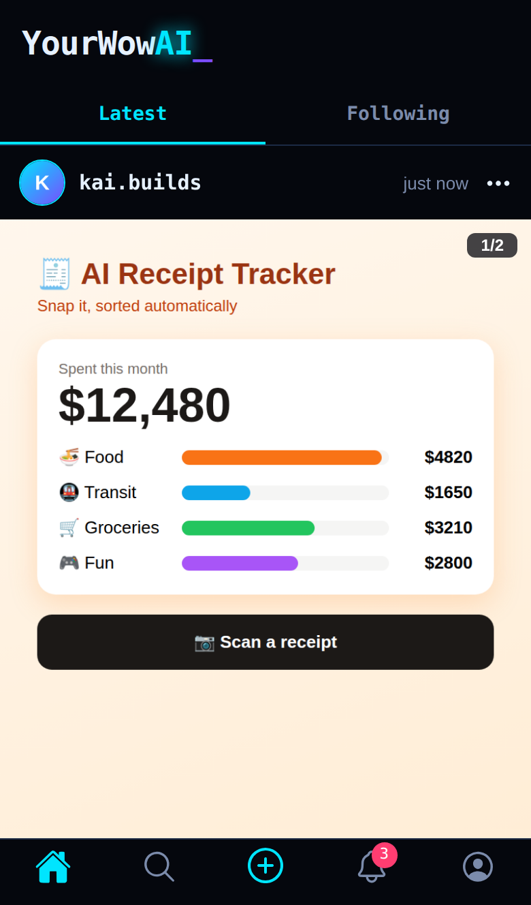
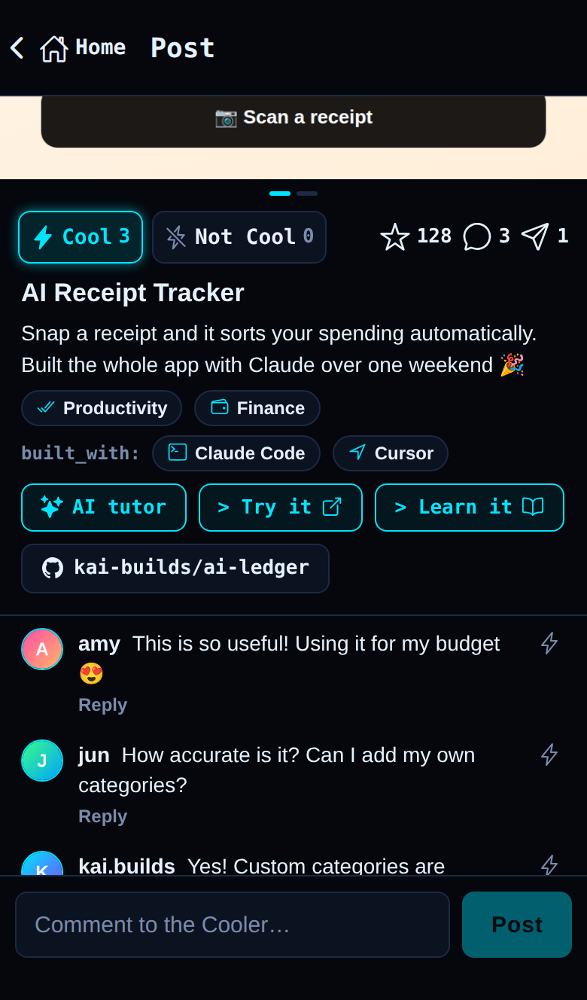
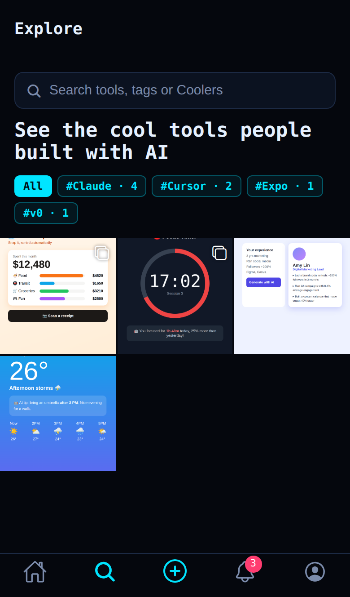
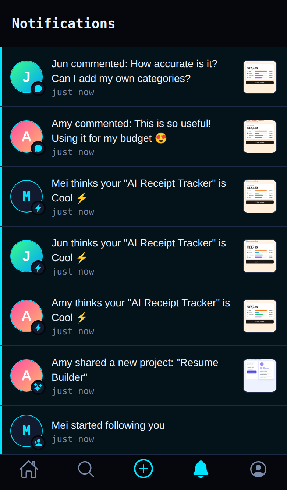
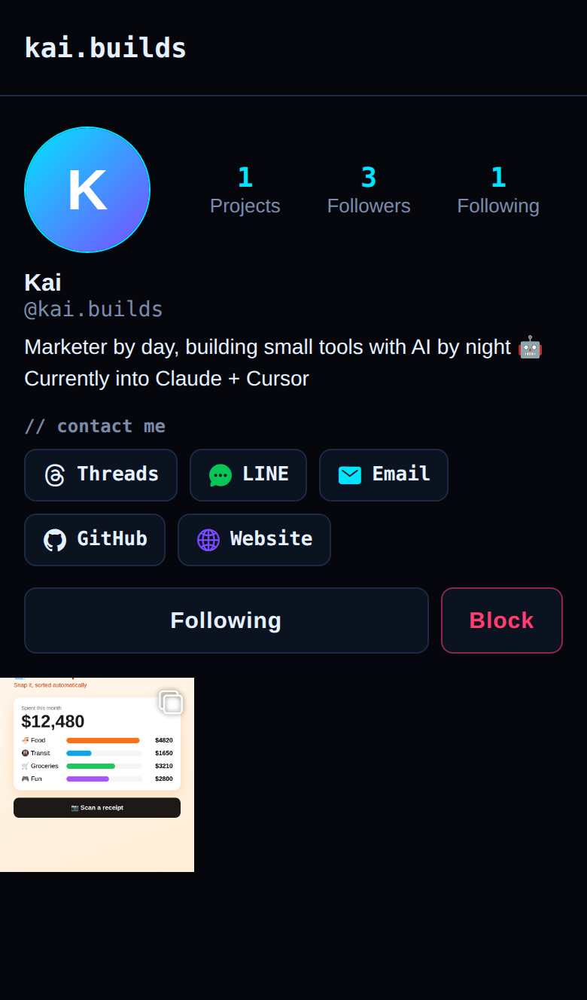
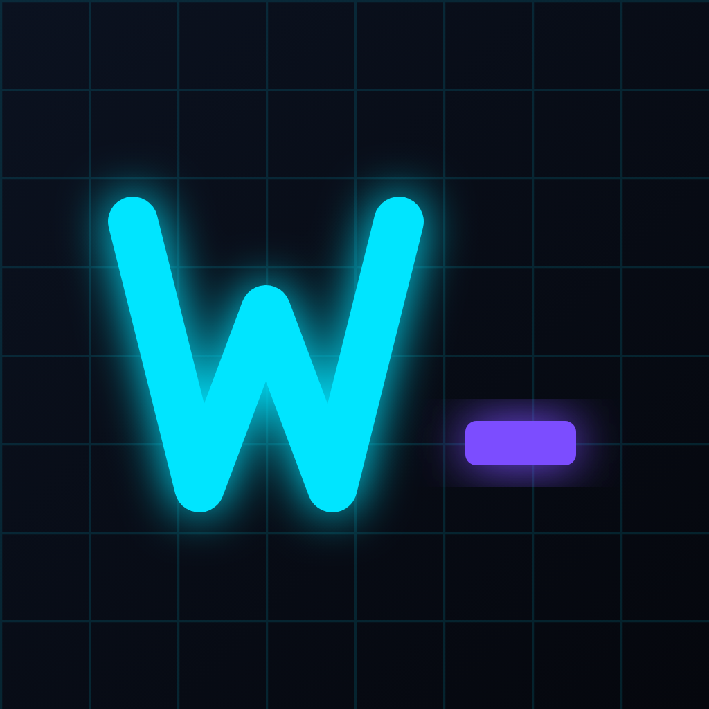

Anyone can build a useful tool with AI now. YourWowAI is where you show it: post a screenshot or a YouTube demo, link your GitHub repo, and let people try it and tell you if it's cool.
0 builders have joined · 0 projects shared

The moment you finish something, you want to show someone
A teacher builds a grading helper. A nurse builds a shift scheduler. A student builds a study tool. The people who need these tools are usually in the builder's own circle, but there's nowhere to share them, so they get posted in a group chat and forgotten. YourWowAI gives every one of them a home where they can be found, tried and learned from.
Everything a post needs, and nothing it doesn't.
Every post needs a screenshot or a YouTube demo. Swipe or tap through up to 10 screenshots, and demos play right in the post. People get what your tool does at a glance.
Instead of likes, people vote Cool or Not Cool. Honest feedback tells you who your tool works for and what to build next.
Paste a repo and the post fills itself in: name, description, website and the AI tools you used. Every post links back to the source code.
Tag the AI you built with (#Claude, #Cursor, #v0…) so people can find your work by tool or keyword instead of scrolling past it.
Get notified the moment someone votes Cool, comments or follows you, and when people you follow share something new.
Add your GitHub, socials or email to your profile. People who like your work can reach you, and your next collaboration might start here.
Report what doesn't belong, block anyone you don't want to see, and posts reported by several people are hidden automatically.
Every project is tagged with what it's for: education, finance, health, games, developer tools and more. Pick a category and see only what matters to you.
Shipped a new version? Edit your post any time: swap screenshots, update the demo, change the description or add categories.
Real app screens. The app is available in English and Traditional Chinese.




Takes less than a minute.
Pick screenshots, take a photo, or paste a YouTube link so people can see your tool in action.
We fill in the name, description, website and AI tools. Choose up to 3 categories so the right people find it.
Your post goes live right away. You'll get notified when people vote, comment or follow you ⚡
No. Sharing is free and there are no ads.
Anything you built with help from AI: websites, apps, browser extensions, automations, small games. If you can show it, you can share it.
So the feed is made of real, working things. Seeing the tool is the fastest way to understand it. Screenshots can be JPG, PNG, GIF or WebP; for videos, upload to YouTube (public or unlisted) and paste the link.
No. GitHub is optional. If your project is in a public repo, pasting it saves you typing and adds a link to the source code.
Our replacement for likes. Everyone gets one vote per post and can change it. Only totals are shown, so nobody sees who voted Not Cool.
Yes, any time, inside the app. Your posts, comments and all your data are deleted immediately.
Yes. Tap "⋯" on your post and choose Edit post. You can change the text, links, YouTube demo, categories and screenshots.
Use the category row on Home or Explore, for example Education, Finance or Games. Tap a category on any post to see similar projects.

Share what you built with AI with the people who need it. YourWowAI works in your browser today; the iPhone app is on its way.
0 builders have joined · 0 projects shared
Want early access or have feedback? Say hi on GitHub.
YourWowAI is made by Chi-Hsien Chang, a PhD candidate in EE/CS at National Taiwan University who teaches people to build software with AI. The motivation is to see how people in different fields use AI to solve the problems they know best, from teachers and nurses to marketers, designers and students, and to help what they build reach the people who need it.